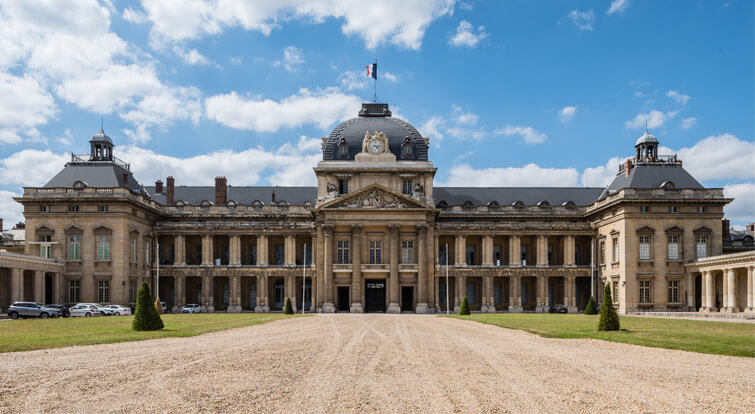
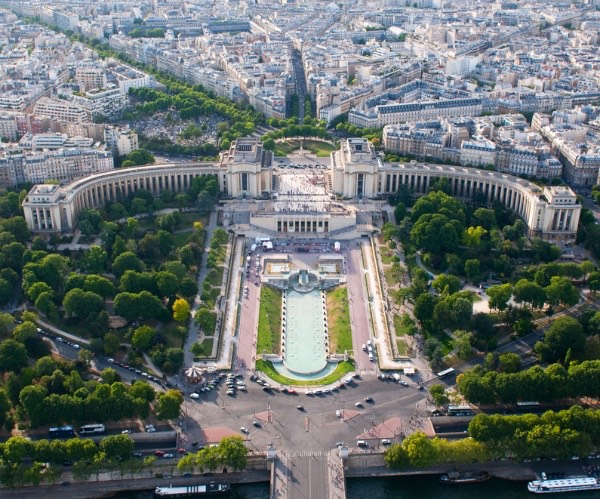

District 1
"Between tradition and modernity, this district will allow you to discover magnificent places and enjoy the sublime view from the Trocadero square, while having time to learn about the history of these monuments"
Eiffel Tower

The Eiffel Tower is an iconic monument in Paris, France. It was built for the 1889 Universal Exhibition to celebrate the centenary of the French Revolution. The tower was designed by Gustave Eiffel and has become the symbol of France worldwide. It is approximately 324 metres high and is open to the public for tours. There are lifts to the top of the tower, where there is a breathtaking view of the city of Paris. The tower is also used for special events such as fireworks displays to celebrate various occasions.
École militaire

The École Militaire de Paris is a historic building located in the 7th arrondissement of Paris, France. It was built between 1751 and 1760 by the architect Jacques-Francois Blondel to be used as a school for young French noblemen who wanted to become officers in the French army. It was also used as a residence for Emperor Napoleon Bonaparte during his reign. The building is in neoclassical style and includes an inner courtyard, a chapel and classrooms. It is surrounded by a large park with gardens and statues. Today it is used by the Institut des Hautes Etudes Militaires, a training school for French army officers, as well as by other organisations and institutions. It is open to the public for guided tours.
Palais de Chaillot

The Palais de Chaillot is a building located on the Place du Trocadero, in the 16th arrondissement of Paris. It was built for the 1937 Universal Exhibition, on the site of the former Palais du Trocadéro. It is a remarkable example of Art Deco architecture, with its elegant style and terrace offering breathtaking panoramic views of the city, including the Eiffel Tower. The history of the Palais de Chaillot dates back to the 19th century, when the Palais du Trocadero was built for the 1878 Universal Exhibition. It was designed to house scientific and cultural exhibitions. However, after the exhibition, it was used for various purposes, notably as a museum of ethnography, then as the Musée des colonies, and finally as the Musée de l'homme. With the Universal Exhibition of 1937, it was decided to build a new building on the site of the Palais du Trocadéro, which would be more suited to the needs of modern France. The Palais de Chaillot was designed by the architect Jacques Carlu, Léon Azéma, Louis-Hippolyte Boileau and Léon Azéma. It is a remarkable example of Art Deco architecture, with elements of neoclassical and modernist styles. It was inaugurated on 6 July 1937 and has been used for many important exhibitions and cultural events. Today, the Palais de Chaillot is home to several cultural institutions, including the Musée de l'Homme, which explores humanities and cultures, and the Théâtre national de la Danse, which presents contemporary dance performances. It is also a place of celebration for major cultural events and national holidays. The terrace of the Palais de Chaillot offers breathtaking panoramic views of the city, including the Eiffel Tower and the Trocadero gardens. It is open to the public and is an interesting place for cultural visits in Paris. It is also a place of celebration for major cultural events and national festivities.